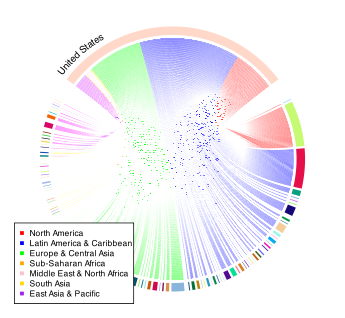
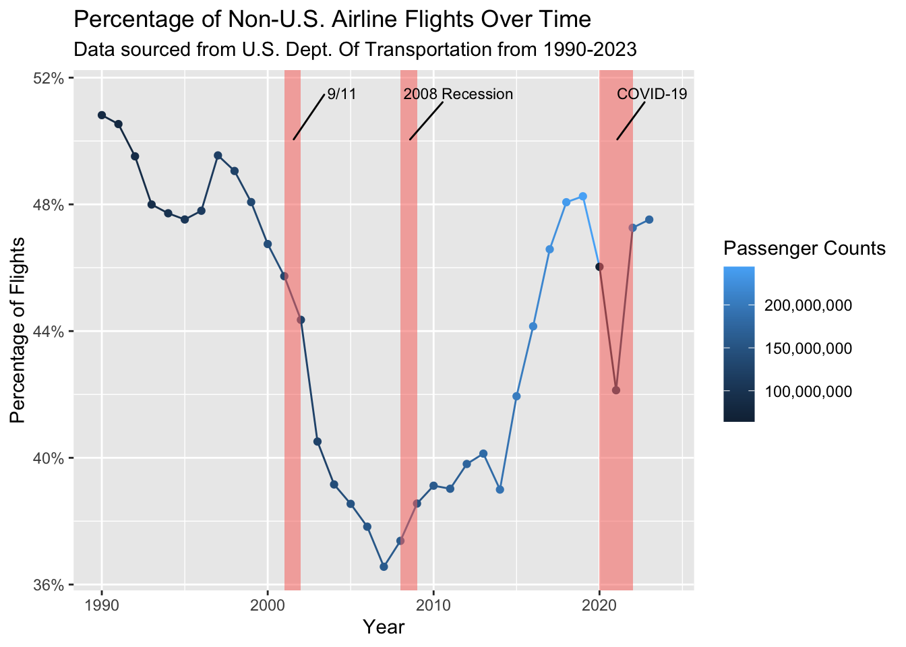

# A tibble: 131 × 2
Country PassengerCount
<chr> <dbl>
1 Mexico 35180049
2 Canada 21188064
3 United Kingdom 15140537
4 Dominican Republic 8581475
5 Germany 8339729
6 France 7200366
7 Netherlands 4973152
8 Colombia 4756091
9 Jamaica 4256244
10 Spain 3898821
11 Japan 3578798
12 South Korea 3437227
13 Italy 3338197
14 Costa Rica 3194987
15 Panama 3192251
# ℹ 116 more rowsProject Write-Up
Write-up
Introduction
International travel has grown to be extreme in size and magnitude, even to the point where it is difficult to analyze data. There are common challenges with interpretations of large datasets, such as every flight for the past 30 years. I believe the United States has an interesting position in terms of travel, given how influential it is in the world sphere, which I believe grows its international travel presence for a myriad of reasons. It also spans nearly the size of an entire continent, which makes it possible to see many different paths too. There is a lot that we can pick out from deep analysis into this travel, and it would be an incredibly educational journey doing so as many people never deal with large data.
For this project, I’m using flight data from the U.S. Department of Transportation to analyze international trends, create tools for people to select their own specific interests, and also visualize some of these trends in a new interesting manner. The data also has two-directional flights where a flight from abroad to the U.S. is also included, not just U.S. to abroad. This allows me to be able to work with a high level of specificity with U.S. international travel.
Observations
Flight Observations
I created a shiny app for users to be able to use to concentrate their focus on select airports. This tool has a lot of flexibility, such as including/excluding filters, selecting which specific airports, and choosing which year and month. Consequently, it is much quicker and easier to analyze a specific hub or network (such as JFK).
On the other hand, I did want to analyze on a high level where do flights often come and go in the United States. Given that each observation is a monthly summary of a flight by an airline, this allows us to be able to represent the number of flights by region through corroborating this information with the country of the airport. For this particular graph, I experimented with a circular graph to display scale a little easier.

There is a lot of discussion that can be made through this graph. Particularly, comparing it to a table visualizing the top countries by number of passengers. An easy conclusion to make is that there is a various size of planes that enter and leave the United States. Given that these are monthly summaries of flights, it seems like there are a lot of flights to Latin America & Caribbean that had a small number of passengers. Additionally, despite Mexico being the top country in the table, airlines would often opt for either larger planes to accommodate more people or more flights in a day (or week), which would not cause a difference in the circular graph, but would be observable in the table. This is particularly observable with Latin America & Caribbean as it seems like nearly a third of the flights went to these locations, yet it is not seemingly a majority in passenger numbers.
Something that is quite interesting is how the top two countries are neighboring countries. This implies to me a lack of alternative infrastructure such as high speed rail that would alleviate this incredible demand, and be more environmentally friendly, and also most likely from a great number of locations similar in travel time. Further analysis into this could allow for some more motivation to grow to support alternative methods of transportation, or enhance the current flight paths and routes through optimization.
Airline Observations
On the other side of things, there are also noticeable trends about airlines. It is possible to make a lot of conclusions based off the percentage of foreign carriers in a market. Below is a graph that does analyze this for the United States from 1990-2023.

There is a lot to take away from this graph. First of all, we could define what are the implications of a high U.S. carrier percentage. Often, this implies a high national control which could come from domestically favored regulation or protectionist policies. On the other side, if there is a high percentage of foreign carriers, it often implies that globalization is promoted and higher competition in the aviation industry but also implies that it is not as competitive as other countries. A 50% rate seems ideal as it implies that it is a very competitive environment where there is competition from foreign and US carriers which results in a better experience for the consumer. It also means that there is a median point between being internationally integrated and also domestic interests are considered. Another implication is that the country has some hubs, but is not merely just a country with airport hubs.
I’ve also added some seemingly relevant historical markings to the graph to explain some trends. It seems that there was a trending decrease in foreign carriers a little before 9/11, but afterwards it heavily damaged the aviation industry in the U.S. in terms of its international integration. However afterwards, even with the recession, it seems like everything was coming back to how it was. COVID-19 took the entire world by storm, and the U.S. aviation industry is not an exception. Though, the U.S. is seeming to return back to its ideal near 50% rate that it hasn’t seen often since 1997, which implies the industry is massively improving.
Without additional analysis on policy making and a deeper history dive, it is difficult to conclude reasoning behind these upwards or downwards trends, but it is easier to make conclusions about the effects of these rates. This dataset had a lot of information that allows for a very detailed historical analysis and checking the shiny app to check huge hubs in the U.S. such as JFK and LAX allows me to understand the situation a little more through visualization to point me in the correct direction and speed up exploratory analysis.
Takeaways
These visualizations and the shiny app heavily speed up the process of exploring the data for more specific research topics. There are a few conclusions that could be argued, but generally it would be difficult without extra data and historical analysis.
In the future, this project could be extended through importing more data. Some ideas include international travel all across the world to analyze trends and possibly be able to make some conclusions about some specific trends. It also would allow us to make in-depth analysis of airport hubs. Some sources for this data if it doesn’t exist is trying to find numbers for visas issued for US travel in other countries (ex: France) which would allow future work to differentiate between someone using Charles de Gaulle Airport (CDG) as a layover or as an actual origin of the flight.
An important reminder for anyone who plans to do work like this is that computational power is absolutely a concern with datasets of this size. I do not have the computational bandwidth to add more data from other sources to make some conclusions, but if done, it would allow for very interesting analysis. International travel will always have extreme factors such as countries in crisis causing mass travel, airport hubs, data cleansing and access, economy indication, and ease of travel. It is not an easy task to take a lot these into consideration, but it is absolutely doable through specifying specific questions. There are tools that would give you an indicator of what to research (which was the goal of the shiny app), which allow this process to be much faster. I’m excited to see further analysis on international travel, particularly in the United States.